standard and non-standard
Isoperimetric Partitions
[E. Paolini: Università di Pisa]
Riccione ‐ Feb 9, 2026
Partitions
Perimeter
$\mathrm{Per}(\mathbf E, B) := \frac 1 2 \sum_{k=1}^N \mathrm{Per}(E_k, B)$ is the total $(d-1)$-area of the interfaces between the regions inside some subset $B$.
(Locally) Isoperimetric Partitions
$$\mathrm{Per}(\mathbf E, B) \le \mathrm{Per}(\mathbf F,B)$$
$$\mathrm{Per}(\mathbf E, B) \le \mathrm{Per}(\mathbf F,B)$$ (1) for every bounded $B$ and every $N$-partition $\mathbf F$ such that $F_k\triangle E_k \Subset B$ and $|F_k| = |E_k|$ for all $k$.
$$\mathrm{Per}(\mathbf E, B) \le \mathrm{Per}(\mathbf F,B)$$ (2) for every bounded $B$ and every $N$-partition $\mathbf F$ such that $F_k\triangle E_k \Subset B$ and $|F_k\cap B| = |E_k\cap B|$.
Joint Work
-
(TAMS 2025)
locally isoperimetric partitions -
(cvgmt 2025)
existence of a non-standard isoperimetric partition
References
-
(INdAM 2025)
On a Free-Endpoint Isoperimetric Problem in $\R^2$ -
(TAMS 2025)
the standard lens cluster in $\R^2$ uniquely minimizes relative perimeter -
(cvgmt 2024)
an infinite double bubble theorem - (cvgmt 2025) On the non-uniqueness of locally minimizing clusters via singular cones
Isoperimetric Cluster
When all regions but one, have finite measure
an $(M+1)$-partition $(E_0, E_1, \ldots, E_M)$
is an $M$-bubble cluster $(E_1, \ldots, E_M)$.
Locally Minimal Partition

When all regions have infinite measure,
we have no volume constraints.
Standard partitions
If $N\le d+2$, there is a unique (up to isometries)
standard $N$-partition of $\mathbb S^d$
Stereographic projections: $\mathbb S^d \to \R^d$ give standard partitions, clusters, or minimal partitions.
Standard partitions $N=2,3,4$
Non-standard partitions
Standard bubbles conjecture
Isoperimetric $M$-bubble clusters
in $\R^d$
...are standard for $M \le d+1$.
(i.e. $M+1 = N \le d+2$)
known isoperimetric clusters
| $M$ | $d=2$ | $d=3$ | $d\ge 4$ | |
|---|---|---|---|---|
| $1$ | Zenodoro | Steiner, Schwarz | De giorgi, Minkowski | |
| $2$ | Foisy et al. | Hutchings-Morgan-Ritoré-Ros | Reichardt | |
| $3$ | Wichiramala | Milman-Neeman | ||
| $4$ | P.-Tamagnini-Tortorelli (equal areas) | |||
| $\vdots$ | ? | |||
|  | $\infty$ | Hales | ? | |
Closure theorem
$$ \begin{cases} \mathbf E_n \to \mathbf E \text{ in } L^1_{\mathrm{loc}} \\ \mathbf E_n \text{ isoperimetric} \\ \text{some \emph{flatness} condition for } \mathbf E \text{ at infinity} \\ \end{cases} $$ $$ \implies \mathbf E \text{ is isoperimetric}. $$
Simons cone
$$ E_1 := \{ (x,y)\in \R^4 : |x| \le |y| \} $$ is a non-standard isoperimetric $2$-partition
Simons bubble
Open question: is it isoperimetric?
Partial result
There exists a
non-standard isoperimetric
$3$-partition
$(E_1,E_2,E_3)$ in $\R^8$ with
$|E_1| = |E_2| = \infty$,
$|E_3| = 1$.
Defect
removed perimeter
$6.82 \quad\le\qquad 7.10 \quad\le\qquad 7.29$